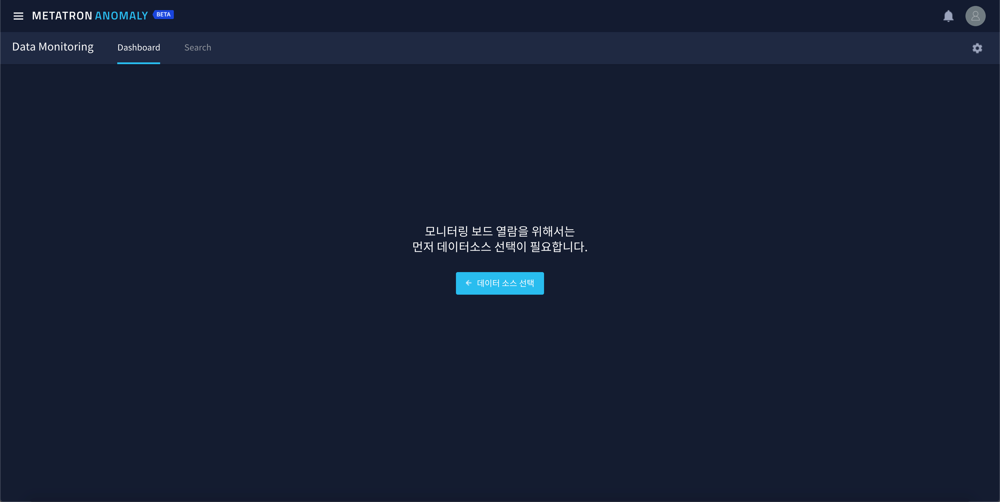

Dashboard¶
Metatron Anomaly provides monitoring of the data source itself, in addition to anomaly detection using a machine learning model. It can be used to find the cause after an alarm has occurred, or it can be used to check what measure and dimension to create an alarm rule for.
Among them, the dashboard is a sub-menu of Data Monitoring, and it is a function created to quickly grasp the status of the data source with a few of the established charts.
Select Data Source¶
First of all, you need to select the data source you want to monitor. You can see the button like below when entering the dashboard menu.

Search and select data source after clicking the button.

{kind=link}
Real-time Dashboard¶
As soon as you select a data source, a dashboard is created with charts for four key measurements. This dashboard is retained even if the user navigates back to another screen and then returns.

Also you can see the information of the data source at the top of the dashboard. Click
if you want to change the data source to monitor.
If no chart is drawn after selecting the data source, check the period to be monitored in the menu on the right-top. This dashboard assumes that you are monitoring data sources that are constantly updated.

Click at the top to auto-update the dashboard at a fixed time. By default, it is updated every 10 seconds, and the update cycle can be changed to 3 seconds, 20 seconds, or 30 seconds.

Click
to switch to full screen mode. Press

Chart¶
The dashboard automatically draws 11 charts for 4 random measures from selected data source.
4 KPI charts for measures : KPI charts for current and average values for 4 individual measures

4 Line charts by 1 demension : Line charts for 4 individual measures for 1 randomly selected dimension value.

Data collection status : A bar chart that records how many data records were collected over a 24-hour period.
Data collection delay time : A chart showing the collection delay time as the difference between the time when the most recent data was collected and the current time.

Alarm occurrence distribution : A pie chart showing the alarms generated by the data source by severity.

{kind=link}
Chart Change¶
Each chart can be changed by clicking the  button on the right.
button on the right.

Modify chart information : You can rename the chart or add a description.

Change chart data : You can change the measure or dimension value to be displayed on the chart.

Refresh chart : Update to the latest data for the individual chart.
Initialize chart : Initializes the chart drawn with the first set measure and dimension values.